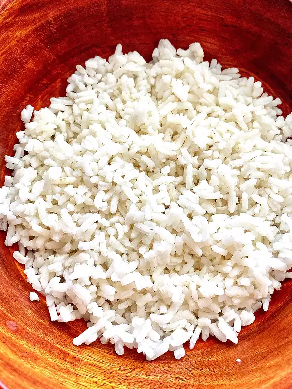

White Rice

How to make this?
Delicious fluffy white rice with aromatic notes!
Ingredients
- 2 teaspoons unsalted butter
- 1 cup uncooked long-grain white rice
- 2 cups water
- 1/2 teaspoon salt
Directions
- Melt butter in a medium saucepan over medium heat. Add rice and stir to coat. Cook until rice grains begin to turn opaque, 1 to 2 minutes; do not brown. Add water and salt.
- Bring to a boil; reduce heat to low. Cover and let simmer for 15 minutes. Do not lift the lid.
- Remove from heat and let stand, covered, for 5 minutes. Fluff with a fork before serving.